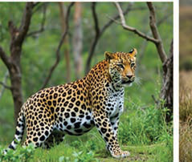
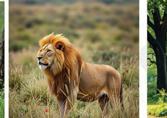
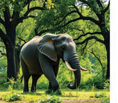
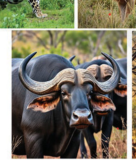
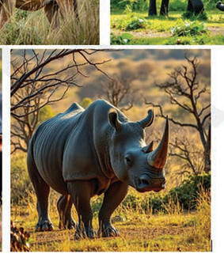

Ibanda, and Selous, are managed by the Tanzania Wildlife Management Authority (TAWA). Wildlife resources provide various benefits that contribute to the development of the nation through tourism, wildlife education culture national heritage and animal harvesting.





Energy
Tanzania has various energy resources, both renewable and non-renewable. The country mainly depends on hydroelectric, natural gas, and biomass energy to generate electricity. Hydroelectric forms a large share of the electricity produced in the country, although its production is affected by drought conditions. Coastal areas rich in natural gas reserves have become a key energy source for the country’s electricity generation and industrial use. Biomass, particularly from wood and agricultural residues, is commonly used for cooking, especially in rural areas. In addition, Tanzania has other renewable energy sources such as wind and solar, which help the country reduce dependence on oil, gas, and hydropower.
In general, Tanzania’s natural resources significantly contribute to the economy through sectors such as agriculture, mining, tourism, and industry. The government is implementing strategies to ensure these resources are used sustainably, for the benefit of the current and future generations.